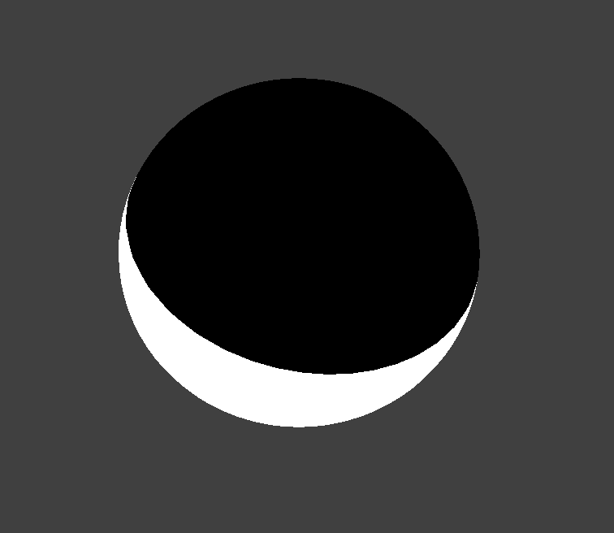
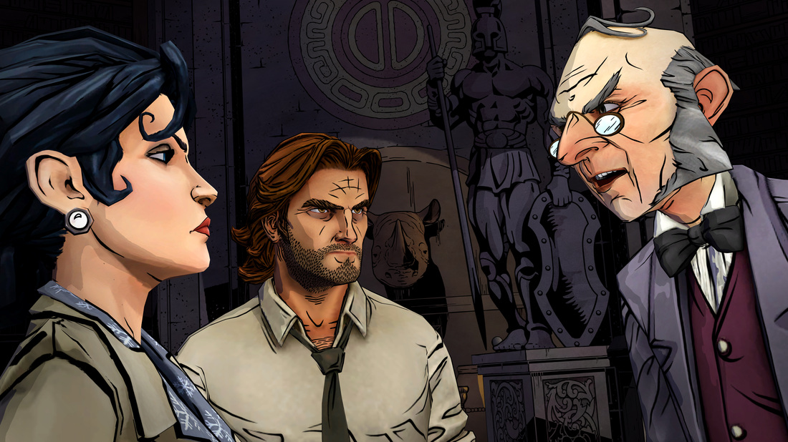

Cel Shading
Tristan Burke, Andrew Noglows, Shivam Parikh
Abstract
Our project was to implement a Cel-Shader, also known as a toon shader. This shading method is similar to the comic book style of rendering images. For the scope of our project, we implemented a single color renderer that has the ability to take in primitive objects, like triangles, spheres, and planes. An added functionality was being able to import triangle meshes in the Wavefront .obj file format. We are pleased to share our results with you below.
Problem Description
We wanted to start by modifying our Project-4 Renderer to utilise the GLSL Shader Capabilities for our problem. We split the problem statement into a few parts. First, we wanted to build a GLSL Shader that applied the properties of the classical toon-shader. Then, we wanted to modify the GUI in the Project-4 Renderer to apply dynamic parameters that could result in different output images for our objects. And finally, we wanted to add more than just collision objects to our input abilities so that we could render external meshes, preferably in pre-existing file formats. One part of our problem that we would have preferred to add but were unable to is the potential for multi-colored scene files.
The Technical Approach
- The GLSL Shader: GLSL Shaders are small programs that run and live on the Graphics Processing Unit (GPU) of a computer. Shaders contain the math equations and calculations that must be evaluated for each pixel rendered on the screen. Typical inputs include the light sources, intensity, material properties, and texture mapping coordinates. The GPU is hardware optimized for these type of per-pixel computations and is able to compute the effects of changing parameters rather quickly when compared to a CPU execution time. GLSL is a C-like language that is targeted towards vector and matrix manipulation. Vectors and matrices are very integral components of most graphics computation. More information about GLSL can be found here. We were introduced to GLSL Shaders in Project 4, so we decided to adapt the Project 4 code to run our custom shader on objects that went beyond the primitive sphere, cloth, and plane of Project 4. The details of our custom shader are discussed in the section on Shading Algorithms.
- Shading Algorithms:
The shading algorithm that we used wat the Blinn-Phong Reflection Algorithm. This algorithm works by calculating the normalization of the dot product of the ray from the point to the viewer (camera) and the reflected light ray on from that point. For each vertex, we calculate its blinn-phong reflection value, which we will call its index. We know that the dot product needs to have a value between -1 and 1, so we uniformly divide this range by the number of bands that the user has selected. For instance, if a user wants their object to have four bands, the ranges of each color assignment will be [-1, -0.5), [-0.5, 0), [0, 0.5), and [0.5, 1]. The colos for each of these ranges are determined by the maximum color and the minimum color that the user will set. Our shader will interpolate the colors for each band. By interpolating on the range, rather than the specific point, this allows for each individual band to maintain the same color and give us the style we desire, rather than having a gradient from the maximum color to minimum color.
After completeing our uniform disstribution we attempted to implement non uniform distributions into our shader. Due to the personalization, that our GUI provides, we decided against ultimately including non-uniform distributions for band index values as it did not provide the added style that we were hoping for. We implemented a guassian distribution for the index ranges and found that it did not add to our project, so we discarded it.
Next, our cel shader implements edge detection. This is done by calculating the normal of the dot product of the vertex normal and the viewer's (camera's) position. If this value is within our specified edge range, then we have detected an edge and will color it the desired edge color.
Finally, we implemented specular shading on our object. We did this by first calculating the halfway H between the lightsource direction and the viewer (camera) direction. Next, we calculate the dot product of H and the vertex normal. If this value is greater than 1 - eta (user specified), then there is specular reflection on this vertex. Depending on the intensity of the highlight that the user specifies, the color is equal to its color from our previously described algorithm multiplied by the intensity.
- Updating the GUI:
We updated the GUI from project 4 to better suit our project. We removed the previous parameter boxes and added our own, mimicing the starter code. Through our GUI, we are able to implement many customization's for our shader, that change its parameters. First, we are able to change the colors used and the number of bands. Next, we can enable/disable specular shading, change the eta value, and change its intensity. We can also enable/disable edge detection, choose the edges width, and its color. Lastly, we are able to change the light sources position. This feature is important because the shader is heavily dependant on the vector from the light source. By being able to move both the camera position and the light position, we can clearly see how our shader reacts!
Customizing the LUT settings of a sphere - The OBJ Loader: We conducted most of our original testing on the simple sphere, plane, and cloth objects made available to us in the Project 4 Code. However, the real magnificence and complexity of our shader can't be admired from looking at perfectly uniform objects. We wanted to be able to compare our results to the images we had found on other cel-shading project results pages. For example, the Utah Teapot and the "https://github.com/Bly7/OBJ-Loader/blob/master/Source/OBJ_Loader.h"
Highlights - Modifying Meshes: Write about using MeshLab to modify meshes, perform loop subdivision, rectify inverted normals, and more.

Notice the outlines surrounding the characters and background
Lessons Learned
Overall, this was a rather interesting project, we learned the following lessons. etc.
Contributions
Overall, everyone contributed equally to the project. Each team member brought great eneergy, enthusiasm, and their own knowledge to this project. We met 12 times to make progress we feel that we could not have produced the final project that we did without each other.
References
Here are some of our resources:
- Project 3-2
- https://en.wikipedia.org/wiki/Cel_shading
- https://www.raywenderlich.com/146-unreal-engine-4-cel-shading-tutorial
- http://nehe.gamedev.net/tutorial/cel_shading/25001/
- http://www.lighthouse3d.com/tutorials/glsl-12-tutorial/toon-shading/
- https://www.cs.rpi.edu/~cutler/classes/advancedgraphics/S12/final_projects/hutchins_kim.pdf
- http://rbwhitaker.wikidot.com/toon-shader
- https://www.reddit.com/r/unrealengine/comments/7wgas1/creating_cel_shading_with_outlines/
- http://users.csc.calpoly.edu/~zwood/teaching/csc471/finalproj24/nmarcy/